Gallery
The film directed by Wes Anderson is the opening film of the 2014 Berlin Film Festival and the winner of the Silver Bear Award.
At the 87th Academy Awards, he received awards for music, art, costume and makeup. As such, it is a work that shows the visual beauty that stands out among the films that appeared in 2014. It was officially reopened on October 11, 2018, with a limited release on CGV to commemorate the special exhibition of Wes Anderson.
-
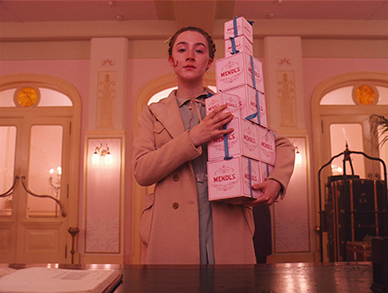 BEAUTY PRODUCTS
These Makeup Wipes are for Fancy Lazy People
-
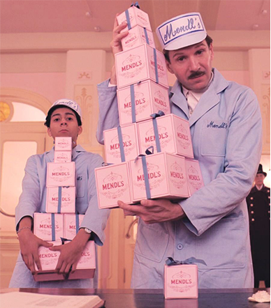 MAKEUP
8 Celebrities Wearing Scrunchies, Because ‘90s Forever
-
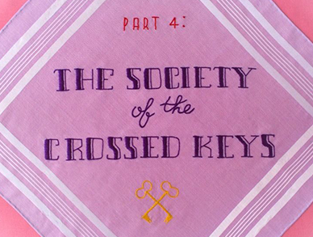 CELEBRITY
8 Things to Know About Bella Hadid’s Mystery Man
-
STAR COUPLES
J.Lo Says a Father’s Day Celebration with Both A-Rod and Marc Anthony Isn’t Out of the Question
-
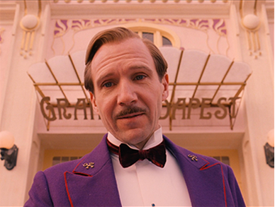 CELEBRITY
Scarlett Johansson Shows Her 72-Year-Old Doppelgänger the Time of Her Life
-
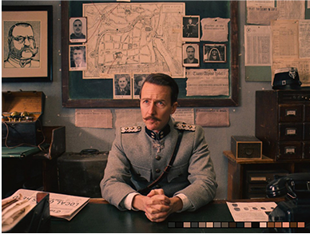 CELEBRITY
Elle Fanning’s Secret to Style Domination on the Red Carpet: “I Go with My Gut!”
-
RED CARPET
The Beguiled L.A. Premiere Was a Stylish Star-Studded Affair
-
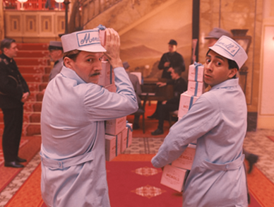 RED CARPET
Scarlett Johansson Glittered at the Rough Night Premiere in a Disco
-
ACCESSORIES
Behold: The Best Tiara Moments in Film
-
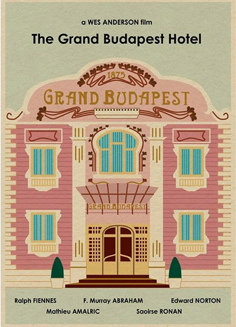 CLOTHING
Here’s the Only Place Serena Williams Could Find a Swimsuit ‘That Would Fit’
-
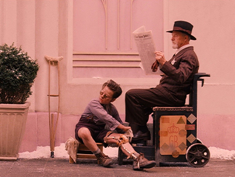 CELEBRITY
See Every Swimsuit the Kardashian-Jenner Squad Has Made Waves in
-
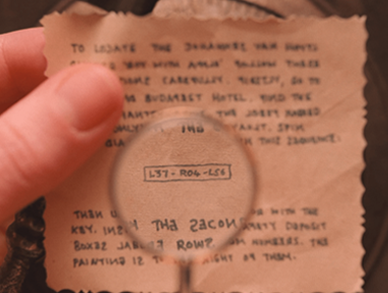 JEWELRY
See Every Swimsuit the Kardashian-Jenner Squad Has Made Waves in
-
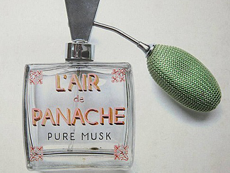 CELEBRITY
Priyanka Chopra: “When I Was a Baby, I Was Already Blinged Out!”
-
HOME
Jennifer Meyer’s Home Is Oh So California Cool
-
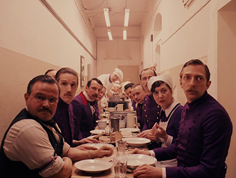 HOME & DECORATING
The Obamas Purchase the Gorgeous D.C. Home They’ve Been Renting